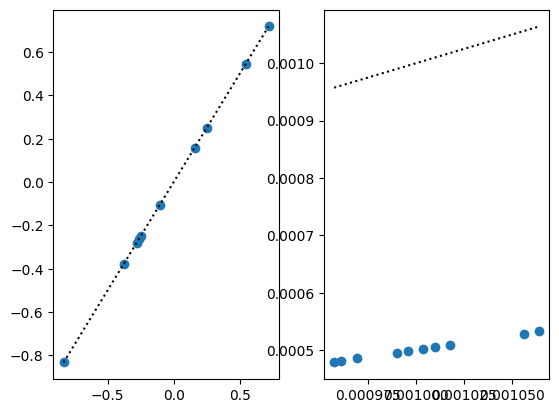
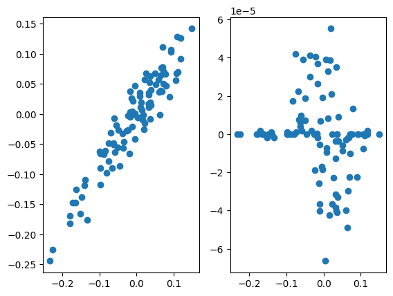
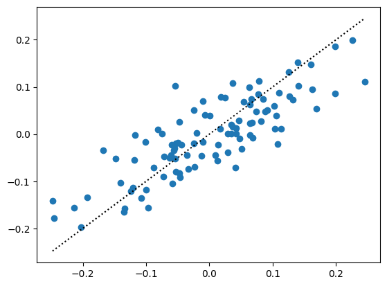
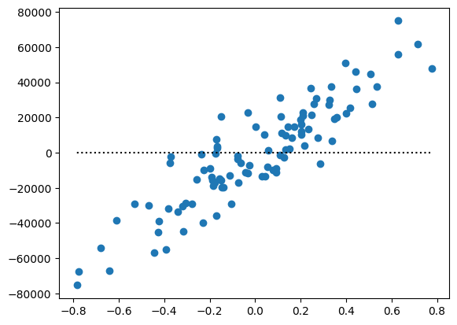

import numpy as np
import jaxopt
from vbmr.core import make_functions
from vbmr.likelihoods import normal_log_likelihood, logistic_log_likliehood
from vbmr.priors import normal_log_marginal_g
import matplotlib.pyplot as plt
import jax
from functools import partial
import jax.numpy as jnpVBMR test
# give transformations for any tunable parameters
def softplus(x):
return jnp.log1p(jnp.exp(x))
transforms = dict(
lparams=dict(scale = softplus),
gparams=dict(scale = softplus)
)
objective, compute_posterior_moments, functions = make_functions(normal_log_likelihood, normal_log_marginal_g, transforms)get_range = lambda x: [x.min(), x.max()]
def simulate_gaussian(n, p, scale=1, scale0=1., seed=1):
np.random.seed(seed)
X = np.random.normal(size=(n, p))
b = np.random.normal(size=p) * scale0
y = X @ b + np.random.normal(size=n) * scale
return dict(y=y, X=X, b=b, scale=scale, scale0=scale0, seed=seed)
# the larger the prior precision, the more aggressive shrinkage.
n, p = 1000, 10
sim = simulate_gaussian(n, p, scale=1., scale0=1.)
y, X, b = sim['y'], sim['X'], sim['b']We still have a lot of work to do on setting up an optimizer for the objective that works reliabl. Here we use jaxopt.ScipyMinimize, but as we will see this can be unstable.
#@partial(jax.jit, static_argnames=['objective', 'compute_posterior_moments'])
def scipy_fit(X, y, params, params_fixed, objective, compute_posterior_moments, maxiter=100):
p = X.shape[1]
solver = jaxopt.ScipyMinimize(fun=objective, maxiter=maxiter)
res = solver.run(params, X=X, y=y, params_fixed=params_fixed) # optimize
mu, var = compute_posterior_moments(res.params, params_fixed)
return dict(res=res, mu=mu, var=var)1 Gaussian likelihood, Gaussian prior
\[ \begin{aligned} y | b, {\bf x}, \sigma^2 \sim N({\bf x}^Tb, \sigma^2) \\ {\bf b} \sim N(0, \sigma^2_0 I_p) \end{aligned] \]
In this case the CAVI updates are easy to compute. We can validate the results of our optimization aproach by comparing to CAVI approximate posterior. The posterior means agree, but the posterior variances are off by a factor of \(2\).
def kl_univariate_gaussian(muq, varq, varg):
return 0.5 * np.sum((varq + muq**2)/varg + np.log(varg/varq) - 1)
def elbo_cavi(mu, var, y, X, tau, tau0):
ybar = X @ mu
d = np.diag(X.T @ X)
kl = kl_univariate_gaussian(mu, var, 1/tau0)
Eloglik = -0.5 * tau * np.sum((y-ybar)**2) - 0.5 * tau * np.sum(d * var)
return Eloglik - kl
def gaussian_mr_cavi(X, y, scale, scale0, maxiter=100):
tau = 1/scale**2
tau0 = 1/scale0**2
n, p = X.shape
mu = np.zeros(X.shape[1])
var = np.ones(X.shape[1])
d = np.diag(X.T @ X)
r = y - X @ mu
elbos = [elbo_cavi(mu, var, y, X, tau, tau0)]
for i in range(maxiter):
for j in range(p):
r = r + X[:, j] * mu[j]
shrink = tau * d[j] /(tau * d[j] + tau0)
bhat = np.sum(r * X[:, j]) / d[j]
mu[j] = shrink * bhat
var[j] = 1/(tau * d[j] + tau0)
r = r - X[:,j] * mu[j]
elbos.append(elbo_cavi(mu, var, y, X, tau, tau0))
return dict(mu=mu, var=var, elbo=np.array(elbos), tau=tau, tau0=tau0)fig, ax = plt.subplots(1, 2)
scale, scale0 = 1., 1.
cavi_fit = gaussian_mr_cavi(X, y, scale, scale0, maxiter=100)
params = dict(
z=np.zeros(p),
s=np.ones(p)
)
params_fixed = dict(
lparams=dict(scale=scale),
gparams=dict(scale=scale0)
)
fit1 = scipy_fit(X, y, params, params_fixed, objective, compute_posterior_moments, maxiter=10000)
plt.sca(ax[0])
plt.scatter(cavi_fit['mu'], fit1['mu'])
plt.plot(get_range(cavi_fit['mu']), get_range(cavi_fit['mu']), color='k', linestyle='dotted')
plt.sca(ax[1])
plt.scatter(cavi_fit['var'], fit1['var'])
plt.plot(get_range(cavi_fit['var']), get_range(cavi_fit['var']), color='k', linestyle='dotted')
cavi_fit['var'] / fit1['var']Array([2.0014555, 1.9945623, 1.9970413, 2.0026052, 2.0013127, 2.0000277,
1.9962125, 1.9993687, 1.9994917, 1.9996684], dtype=float32)1.1 Estimating hyperparameters
Here we try optimizing the prior variance of the effect. There is likely a bug, the optimization drives the prior variance to \(0\), so that all the effects are \(0\). Indeed the ELBO is better for the null solution than when the prior variance is fixed to it’s true value. There is probably a bug.
# the larger the prior precision, the more aggressive shrinkage.
n, p = 1000, 100
sim = simulate_gaussian(n, p, scale=1., scale0=0.1)
y, X, b = sim['y'], sim['X'], sim['b']
# fixed prior variance
params = dict(
z=np.zeros(p),
s=np.ones(p)
)
scale0 = 0.1
params_fixed = dict(
lparams=dict(scale=1.0),
gparams=dict(scale=scale0)
)
fit1 = scipy_fit(X, y, params, params_fixed, objective, compute_posterior_moments)
# estimate prior variance
params = dict(
z=np.zeros(p),
s=np.ones(p),
gparams=dict(scale=1.0)
)
params_fixed = dict(
lparams=dict(scale=1.0),
gparams = dict()
)
fit2 = scipy_fit(X, y, params, params_fixed, objective, compute_posterior_moments)
fig, ax = plt.subplots(1, 2)
plt.sca(ax[0]); plt.scatter(b, fit1['mu'])
plt.sca(ax[1]); plt.scatter(b, fit2['mu'])
print(f"estimate prior variance: {softplus(fit2['res'].params['gparams']['scale'])**2:.2f}, -ELBO: {fit2['res'].state.fun_val:.2f}")
print(f"fixed prior variance: {scale0**2:.2f}, -ELBO: {fit1['res'].state.fun_val:.2f}")estimate prior variance: 0.00, -ELBO: 1785.60
fixed prior variance: 0.01, -ELBO: 2143.072 Logistic regression
Here we demonstrate fitting logistic regression with a gaussian prior. When the effects are small, we are able to optimize. When the effects are large the optimization fails and we predict huge posterior means. Perhaps notably, the estimated effect sizes correlate well with the true effect sizes.
def simulate_logistic(n, p, tau0=1., seed=1):
np.random.seed(seed)
X = np.random.normal(size=(n, p))
b = np.random.normal(size=p) / np.sqrt(tau0)
logit = X @ b
p = 1 / (1 + np.exp(-logit))
y = np.random.binomial(1, p)
return dict(y=y, X=X, b=b, tau0=tau0, seed=seed)
transforms = dict(
tau0 = lambda x: jnp.log(1 + jnp.exp(x))
)n, p = 1000, 100
sim = simulate_logistic(n, p, tau0=100., seed=11)
y, X, b = sim['y'], sim['X'], sim['b']
logistic_params_init = dict(
z = np.zeros(p),
s = np.ones(p),
gparams = dict(),
lparams = dict(),
)
logistic_params_fixed = dict(
lparams = dict(), # residual error precision
gparams = dict(scale = 0.1) # prior effect precision
)
logistic_objective, logistic_compute_posterior_moments, functions = make_functions(logistic_log_likliehood, normal_log_marginal_g, transforms)
logistic_fit = scipy_fit(X, y, logistic_params_init, logistic_params_fixed, logistic_objective, logistic_compute_posterior_moments, maxiter=10000)
plt.scatter(b, logistic_fit['mu'])
plt.plot(get_range(b), get_range(b), color='k', linestyle='dotted')
sim = simulate_logistic(n, p, tau0=10., seed=11)
y, X, b = sim['y'], sim['X'], sim['b']
logistic_params_init = dict(
z = np.zeros(p),
s = np.ones(p),
gparams = dict(),
lparams = dict(),
)
logistic_params_fixed = dict(
lparams = dict(), # residual error precision
gparams = dict(scale = 0.1) # prior effect precision
)
logistic_objective, logistic_compute_posterior_moments, functions = make_functions(logistic_log_likliehood, normal_log_marginal_g, transforms)
logistic_fit = scipy_fit(X, y, logistic_params_init, logistic_params_fixed, logistic_objective, logistic_compute_posterior_moments, maxiter=10000)
plt.scatter(b, logistic_fit['mu'])
plt.plot(get_range(b), get_range(b), color='k', linestyle='dotted')/Users/ktayeb/research/self-tuning-penalty/.venv/lib/python3.13/site-packages/jax/_src/numpy/lax_numpy.py:5540: RuntimeWarning: overflow encountered in cast
out = np.asarray(object, dtype=dtype)
/Users/ktayeb/research/self-tuning-penalty/.venv/lib/python3.13/site-packages/jax/_src/numpy/lax_numpy.py:5540: RuntimeWarning: overflow encountered in cast
out = np.asarray(object, dtype=dtype)